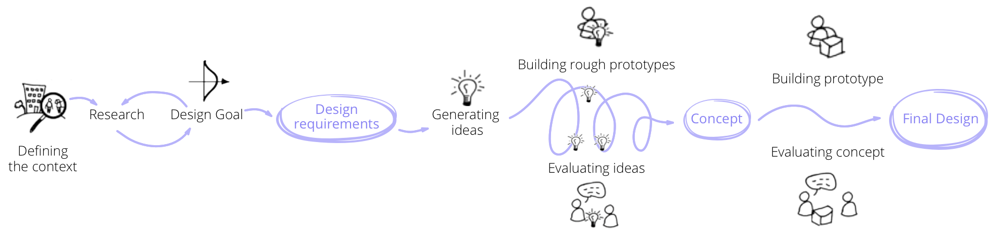
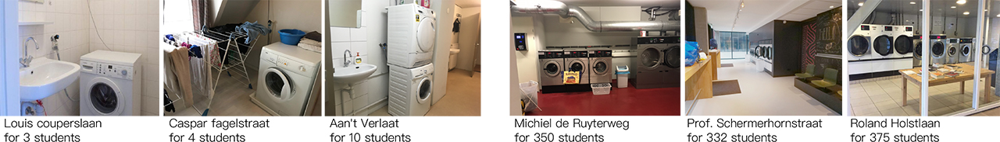
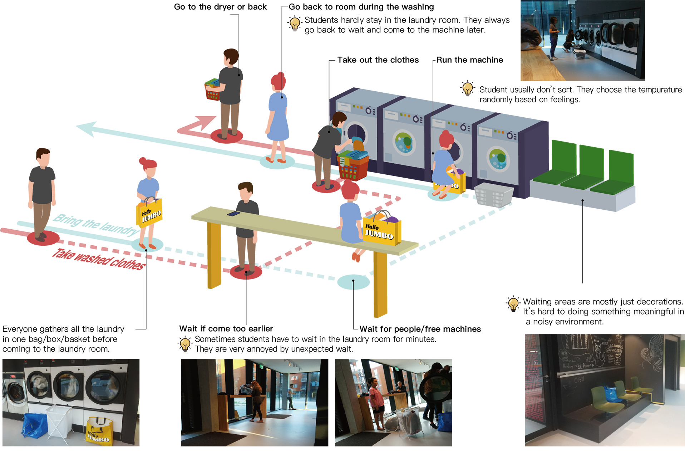
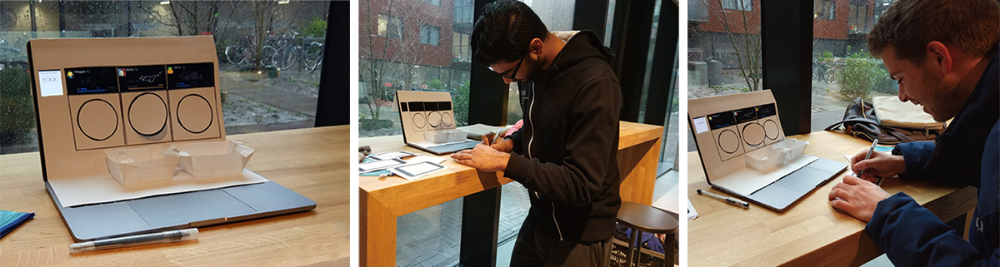
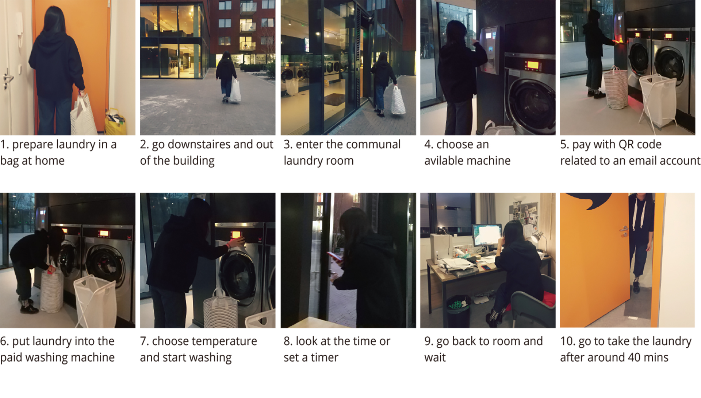
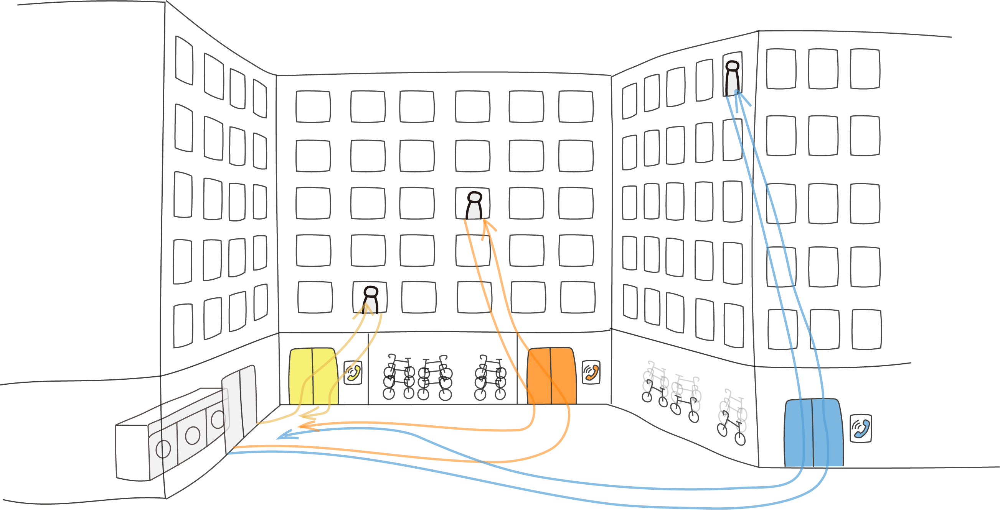
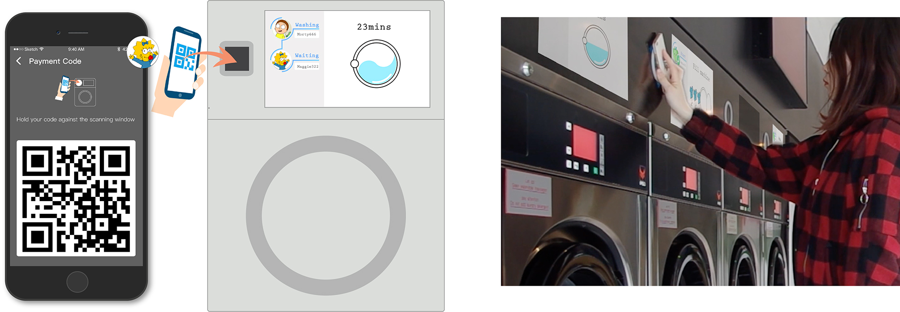
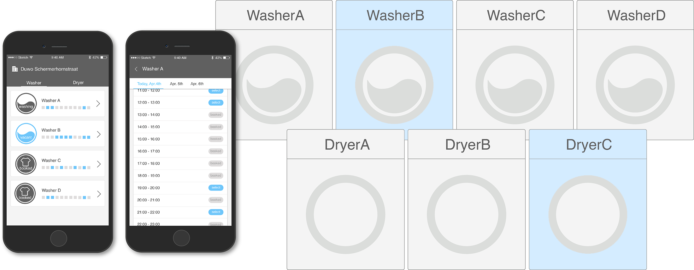
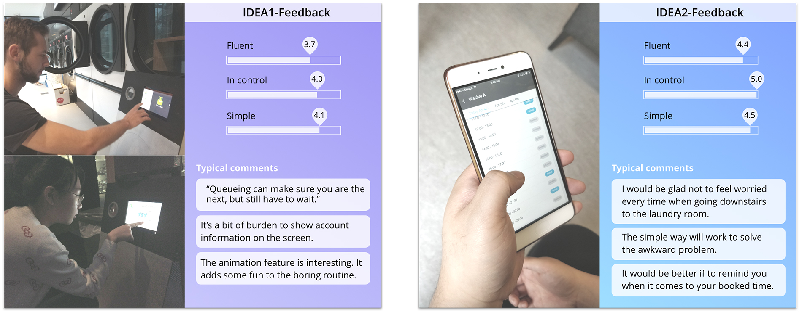

College Laundrymate
College Laundrymate is an individual design project carried out in the course Exploring Interactions for the Master Design for Interaction in Tu Delft. In my case, I explored the context in the specific location of college communal laundry room to investigate and improve experience. The course required students to design an experiential interaction scenario for specific people and situations on a personal, emotional level, or on an interpersonal, social level.
Duration
- Sep - Dec, 2017
Individual Project
Tools
- Sketch, Illusrastor, Photoshop,
- Invision, After Effects
Project Process
Context Introduction
The context location is the communal laundry room in a student dormitory. Four washing machines and three driers are shared by more than 300 students residents in Delft. Despite the high-quality laundry facilities provided for the whole community, the situation of “sharing with others” degrades their experience too much.
Interview Session
Interviewees
3 students sharing private machines with roommates
3 students doing laundry in a communal laundry room
Research Question
To start exploring my design goal, I posed two research questions to myself to answer.
1. How do college students look at sharing washing machines with neighbors/roommates?
2. How do they do their laundry routine(now/before college)?
Interview Question
1. How did you get your clothes washed before college?
2. How often do you do your laundry? Usually on which day and what time?
3. Is there something bothering you or bringing you convenience when sharing a washing machine with others?
4. Do you sort your laundry? In which way?
5. Have you ever sorted your laundry with your roommates/neighbour together? Why/Why not?
6. How do you describe your experience of doing laundry?
Observation In Context
Look into Emotions
To further define some emotional moments I found in communal use, I did a small research session to know studens' opinions and feelings about this activitity and other residents.
I put participants(8 students from targeted group) into different communal laundry scenarios (different time left) when people need to wait for the last person. They made choices in different scenarios and reacted to it.
When they bring the laundry but find all the machines are in use, they feel annoyed and irritated.
They would only wait for free machines when time left is not long (5-10mins). It’s boring and frustrating not being able to do anything meaningful.
When a wash is done but the owner hasn’t come, they feel hesitant and confused whether they can move others’ clothes.
They feel embarrassed and a bit sorry when taking out others’ clothes after struggling.
Task Walkthrough
Step-by-step tour of one return
Students need to make 3 returns (wash,dry,fetch) to finish laundry. Sometimes they come in vain when it’s too long to wait a free machine.
Design Requirements
| Problem Statement | Design requirements | Priority |
| Unexpected wait: No free washers or dryers because of limited number of machines | Enable students to view status of the machines in advance | P1 |
| Uncertain wait: Last person doesn’t take washed clothes in time | Remind students to have the awareness of following good laundry etiquettes | P1 |
| Meaningless time: Students don’t want to stay to wait but they cannot make sure they are the next if they come back later. They are not able to make use of that time. | Enable students to fully control their laundry schedule. Avoid any unncevssary wait. | P1 |
| Wasted mobility: Students come in vain when it’s too long to wait. | Create basic rules and waiting orders | P1 |
| Distraction: Pay attention to time when the washer/dryer is working | Enable students to receive reminders automatically, to take out clothes in time | P2 |
| Tedious procedures: Too many steps on different devices to pay and start | Enable students to pay and start easily and quickly | P2 |
Design Ideas
IDEA1 - Pay or Queue directly on a specific machine
Students scan payment QR codes to pay on a machine directly, or queue on the machine they want to wait for when all machines are in use. Animations on the screen show the status.
start
washing
washing; waiting
finished
IDEA2 - Book slot online
Students check the machine status online first before going to laundry room. They can book slot of an hour to arrange their laundry routine in advance.
Idea Evaluation
10 students from the target group experienced the prototypes of these two ideas. They were asked to rate the desired interaction qualities in design requirements. According to feedbacks, I took idea2 as the concept to next design stage.
